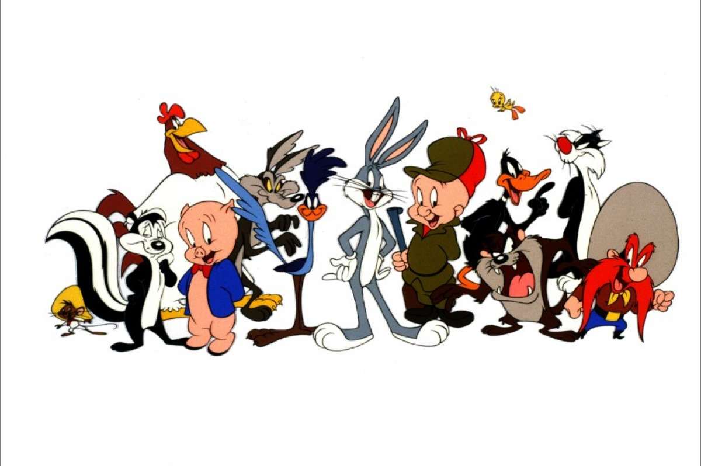

About Bugs Bunny
Bugs Bunny is an animated cartoon character created in the late 1930s by Leon Schlesinger Productions (later Warner Bros. Cartoons) and voiced originally by Mel Blanc. Bugs is best known for his starring roles in the Looney Tunes and Merrie Melodies series of animated short films, produced by Warner Bros.
Characteristics
- Tricky
- Charismatic
- Shrewd
- Loves Carrots
Friends
Bugs Bunny and Friends